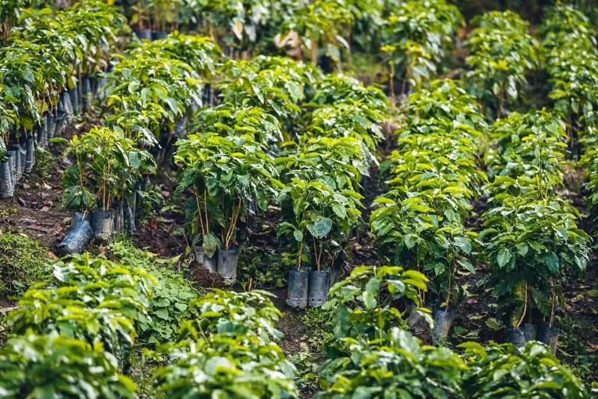
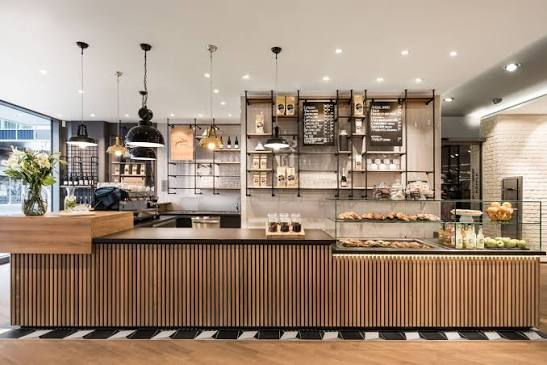
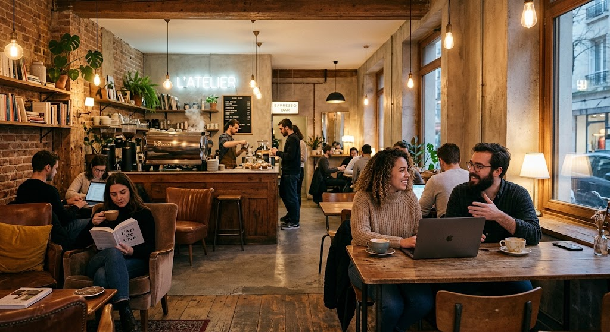

Une passion partagée
L'Atelier de Café est né d'une idée simple : redonner au café ses lettres de noblesse dans un cadre épuré et minimaliste.
Nous croyons qu'une tasse de café n'est pas juste une boisson rapide, mais une véritable expérience qui rassemble. C'est pourquoi nous mettons toute notre exigence dans la sélection de nos grains, la torréfaction, et la préparation minutieuse de chaque commande.
Nos 3 piliers
1. Grains d'exception
Nous sélectionnons des cafés 100 % Arabica issus de petits producteurs engagés dans une agriculture durable. Chaque grain est choisi pour exprimer son terroir unique.
2. Savoir-faire artisanal
Nos baristas maîtrisent l'art complexe de l'extraction. Que ce soit en méthode douce (V60, Chemex) ou en Expresso, nous révélons toutes les notes aromatiques avec précision.
3. Ambiance chaleureuse
Fauteuils confortables, musique douce, décoration brute et Wi-Fi gratuit : L'Atelier est l'endroit idéal pour déconnecter ou pour travailler sereinement.

Le voyage du grain
Nous privilégions le "Direct Trade" (commerce direct) afin de garantir une rémunération juste aux cultivateurs situés en Éthiopie, en Colombie ou au Costa Rica. Nous choisissons des grains cultivés en haute altitude, cueillis à la main à parfaite maturité. La torréfaction est ensuite réalisée de manière artisanale : une torréfaction légère à moyenne qui respecte le grain, ne le brûle jamais, et permet d'exprimer des notes florales, fruitées ou chocolatées uniques à chaque terroir.
La précision à l'état pur
Derrière le comptoir, rien n'est laissé au hasard. Nos baristas voient le café comme une véritable science. La température de l'eau, le grammage exact, la taille de la mouture ajustée au micromètre près, et le temps d'extraction sont contrôlés avec une rigueur absolue. Ils s'entraînent quotidiennement pour sublimer chaque recette et vous offrir des tasses parfaitement équilibrées, couronnées par des techniques de Latte Art irréprochables.


Votre refuge urbain
Nous avons conçu L'Atelier comme une extension de votre propre salon. L'architecture d'intérieur mêle des matériaux bruts et nobles avec des lumières chaudes. L'acoustique a été pensée pour préserver le calme : une playlist lofi douce, le murmure des conversations et le son réconfortant de la machine à expresso. Que vous soyez plongé dans un livre, concentré sur votre écran ou en pleine discussion refaisant le monde, le parfum du café fraîchement moulu vous accompagne pour vous offrir une véritable parenthèse.